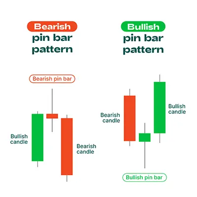
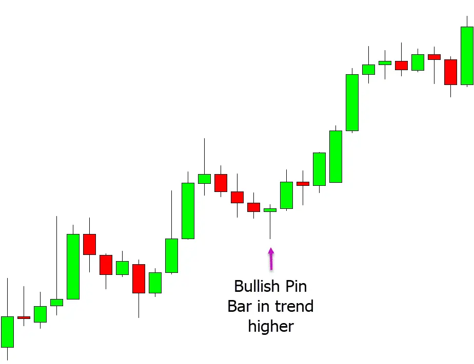

পিন বার প্যাটার্ন হলো একটি ট্রেডিং প্যাটার্ন যা বাজারের উধর্বমুখী বা নিম্নমুখী
প্রবণতার অবসান এবং বিপরীত প্রবণতার সুচনা নির্দেশ করে। এই প্যাটার্নট
একটি দীর্ঘ শরীর এবং একটি ছোট টেল দিয়ে গঠিত হয়। শরীরের দৈর্ঘ্য টেলের
দৈর্ঘ্যের তিনগুণ বা তার বেশি হলে প্যাটার্নটি আরও শক্তিশালী হয়।
